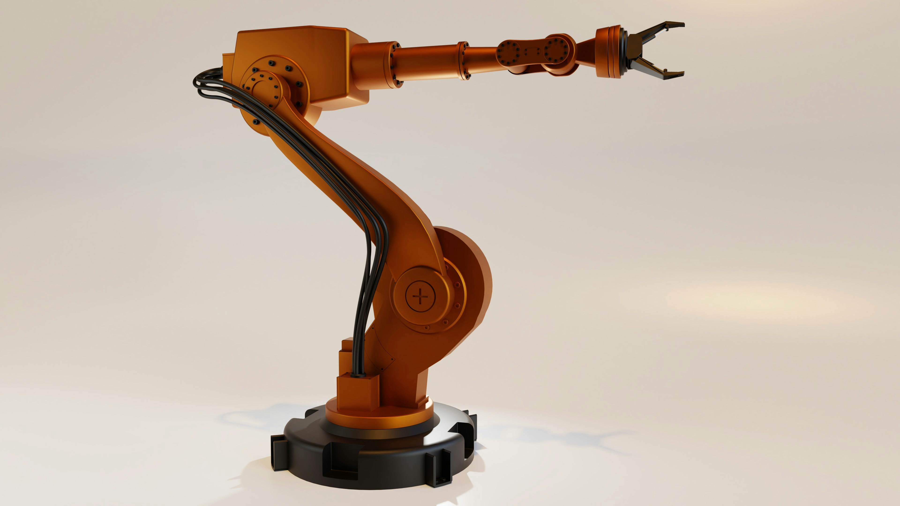
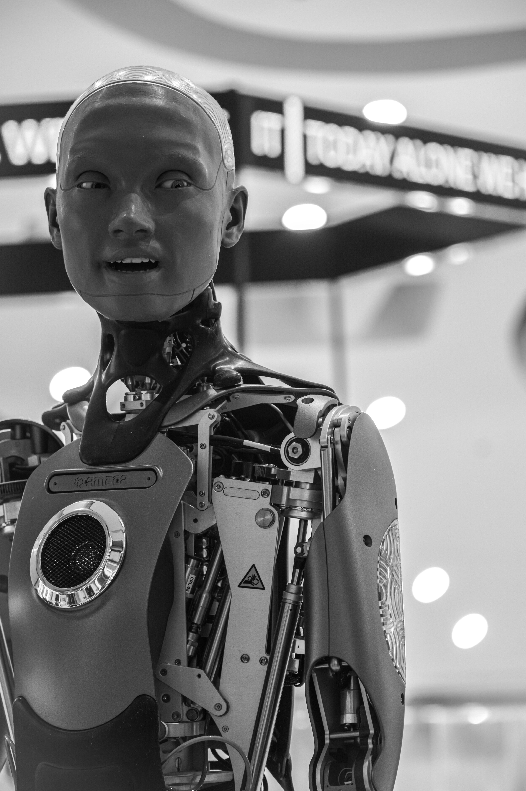
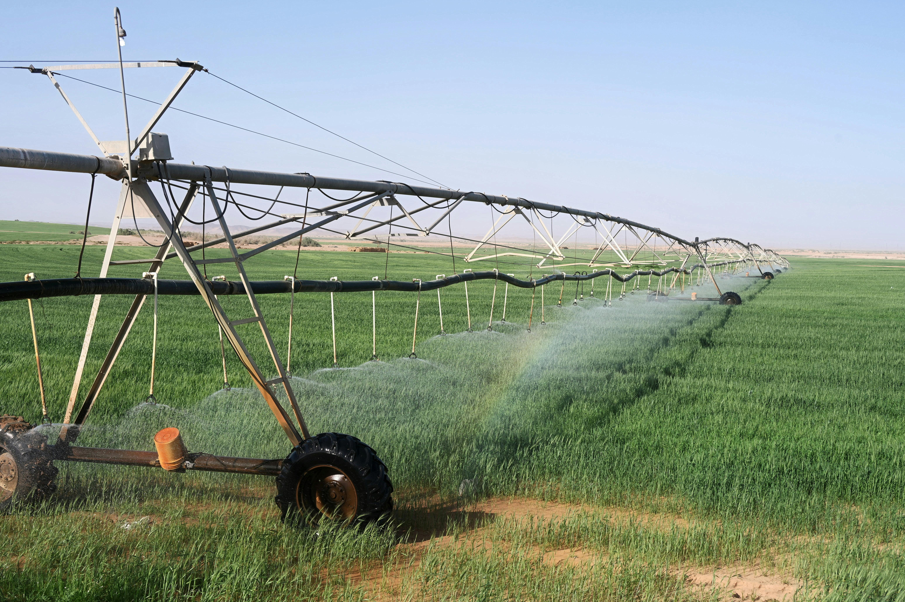
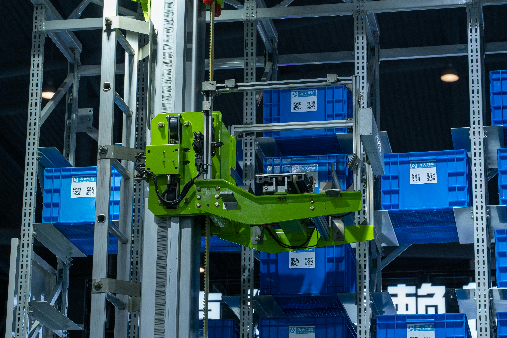
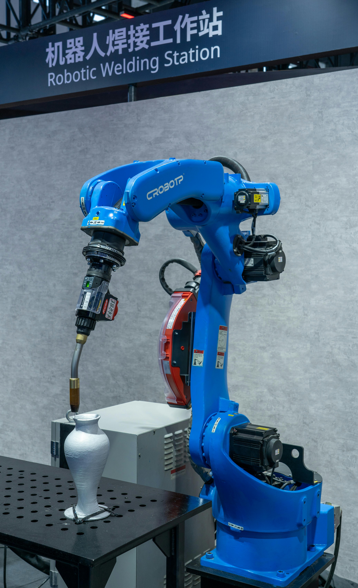
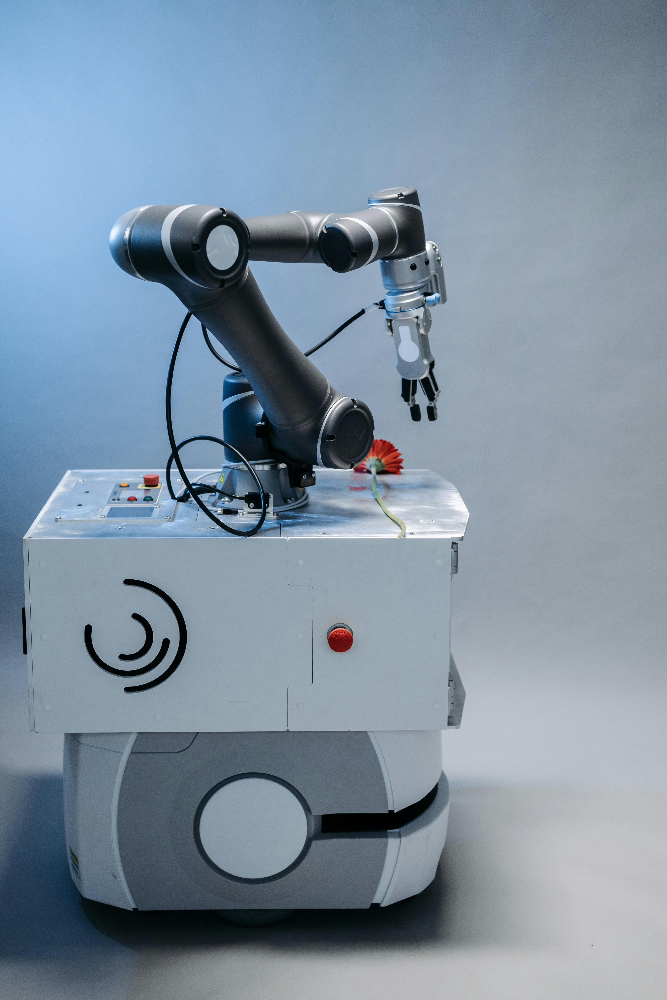

Introducción a la Robótica
Vamos a descubrir qué es un robot, cómo funciona, qué tipos existen y dónde los puedes encontrar (incluso aquí, en Murcia). Responde a todas las preguntas en los cuadros de texto.

./img/robotica/hero-s1.jpg
maquina-excavadora.jpg
automata-semaforo.jpg

robot-humanoide.jpg
Ejemplo: el jardín se riega siempre a la misma hora, aunque esté lloviendo.
Ejemplo: el jardín solo se riega si la tierra está seca al llegar la hora programada.

riego-huerta.jpg
El término "robótica" fue acuñado por Isaac Asimov para describir la tecnología de los robots. Predijo el auge de la industria robótica, predicción que ya es una realidad.
La palabra "robot" proviene del término checo robota, que significa "esclavo". Fue usada por primera vez en 1921 en la obra de teatro R.U.R. (Rossum's Universal Robots) del checo Karel Čapek, que planteaba si los robots estaban siendo explotados y qué consecuencias podría traer.
Los principales objetivos de la robótica son abaratar los costes de producción y realizar tareas tediosas o peligrosas. Hoy los encontramos en industria, hostelería, medicina, seguridad y muchos más sectores.
Los robots se pueden clasificar de distintas maneras. Aquí tienes dos criterios principales:
| Tipo | Siglas | Descripción | Ejemplo |
|---|---|---|---|
| AMR | Autonomous Mobile Robot | Se mueven y toman decisiones gracias a sus sensores y cámaras | Robot de almacén Amazon |
| AGV | Automated Guided Vehicle | Se mueven siguiendo pistas o recorridos predefinidos | Autobús sin conductor de Málaga |
| Fijo | — | Trabajan dentro de su área de alcance, sin desplazarse | Brazo robótico en fábrica de coches |
| Humanoide | — | Tienen forma de personas o animales | Robot Ameca |
| Cobot | Collaborative Robot | Diseñados para funcionar junto a los humanos o con ellos | Brazo robot en laboratorio de análisis |
| Híbrido | — | Combinación de varios tipos de robots para tareas complejas | Brazo fijo sobre un AMR |

amr-amazon.jpg

brazo-fijo.jpg

cobot-laboratorio.jpg
No hace falta irse a Japón o Boston para encontrar robots. En Murcia y en el resto de España ya hay robots trabajando en hospitales, huertas y fábricas. Estos son algunos ejemplos reales:

murcia-regadio.jpg
(1 = nada, 5 = mucho)
¿Has terminado la Sesión 1? Exporta tus respuestas en PDF para entregarlas.